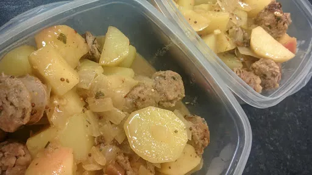

Sausage with apple and mustard
15 mins
Serves 4

Ingredients
- 1 tbsp olive oil
- 4-6 sausages, pork, herby or vegetarian
- 1 small onion, sliced
- 2 medium potatoes, washed and cut into 2 cm cubes
- 1 vegetable stock cube, dissolved in 1 mug of boiling water
- 1 eating apple, cut into chunks
- 1 tsp mustard
- 2 tbsp of sweet chutney
- salt and pepper
Instructions
- Heat a little
oil1 tbsp
in a wok or frying pan and fry the sausages4-6
until they are browned on all sides. Take them from the pan.
- Tip out any excess
oil1 tbsp
and fry the onion1 small
and potatoes2 medium
, until they begin to brown.
- Add the
stock1
, water, apple1
, mustard1 tsp
, chutney2 tbsp
and return the sausages4-6
to the wok. Bring everything to the boil and then turn down and the heat and simmer for 10-15 minutes, until the potatoes2 medium
are cooked. Stir a couple of times during the cooking process.
- Season well with salt and pepper and serve.
Nosh for students
Short Link
Long Link